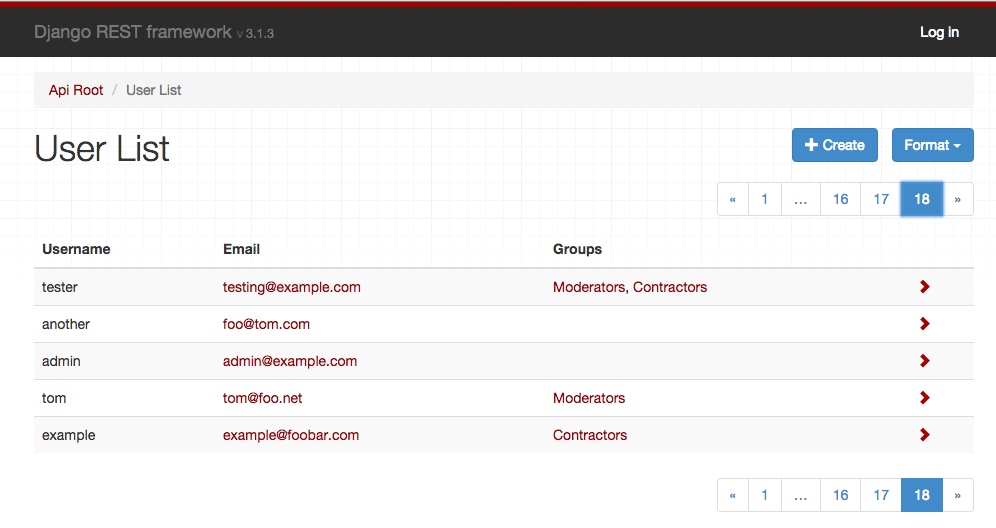

Django REST framework 3.2
The 3.2 release is the first version to include an admin interface for the browsable API.

This interface is intended to act as a more user-friendly interface to the API. It can be used either as a replacement to the existing BrowsableAPIRenderer, or used together with it, allowing you to switch between the two styles as required.
We've also fixed a huge number of issues, and made numerous cleanups and improvements.
Over the course of the 3.1.x series we've resolved nearly 600 tickets on our GitHub issue tracker. This means we're currently running at a rate of closing around 100 issues or pull requests per month.
None of this would have been possible without the support of our wonderful Kickstarter backers. If you're looking for a job in Django development we'd strongly recommend taking a look through our sponsors and finding out who's hiring.
AdminRenderer
To include AdminRenderer simply add it to your settings:
REST_FRAMEWORK = {
'DEFAULT_RENDERER_CLASSES': [
'rest_framework.renderers.JSONRenderer',
'rest_framework.renderers.AdminRenderer',
'rest_framework.renderers.BrowsableAPIRenderer'
],
'DEFAULT_PAGINATION_CLASS': 'rest_framework.pagination.PageNumberPagination',
'PAGE_SIZE': 100
}
There are some limitations to the AdminRenderer, in particular it is not yet able to handle list or dictionary inputs, as we do not have any HTML form fields that support those.
Also note that this is an initial release and we do not yet have a public API for modifying the behavior or documentation on overriding the templates.
The idea is to get this released to users early, so we can start getting feedback and release a more fully featured version in 3.3.
Supported versions
This release drops support for Django 1.4.
Our supported Django versions are now 1.5.6+, 1.6.3+, 1.7 and 1.8.
Deprecations
There are no new deprecations in 3.2, although a number of existing deprecations have now escalated in line with our deprecation policy.
request.DATAwas put on the deprecation path in 3.0. It has now been removed and its usage will result in an error. Use the more pythonic style ofrequest.datainstead.request.QUERY_PARAMSwas put on the deprecation path in 3.0. It has now been removed and its usage will result in an error. Use the more pythonic style ofrequest.query_paramsinstead.- The following
ModelSerializer.Metaoptions have now been removed:write_only_fields,view_name,lookup_field. Use the more generalextra_kwargsoption instead.
The following pagination view attributes and settings have been moved into attributes on the pagination class since 3.1. Their usage was formerly in 'pending deprecation', and has now escalated to 'deprecated'. They will continue to function but will raise errors.
view.paginate_by- Usepaginator.page_sizeinstead.view.page_query_param- Usepaginator.page_query_paraminstead.view.paginate_by_param- Usepaginator.page_size_query_paraminstead.view.max_paginate_by- Usepaginator.max_page_sizeinstead.settings.PAGINATE_BY- Usepaginator.page_sizeinstead.settings.PAGINATE_BY_PARAM- Usepaginator.page_size_query_paraminstead.settings.MAX_PAGINATE_BY- Usepaginator.max_page_sizeinstead.
Modifications to list behaviors
There are a couple of bug fixes that are worth calling out as they introduce differing behavior.
These are a little subtle and probably won't affect most users, but are worth understanding before upgrading your project.
ManyToMany fields and blank=True
We've now added an allow_empty argument, which can be used with ListSerializer, or with many=True relationships. This is True by default, but can be set to False if you want to disallow empty lists as valid input.
As a follow-up to this we are now able to properly mirror the behavior of Django's ModelForm with respect to how many-to-many fields are validated.
Previously a many-to-many field on a model would map to a serializer field that would allow either empty or non-empty list inputs. Now, a many-to-many field will map to a serializer field that requires at least one input, unless the model field has blank=True set.
Here's what the mapping looks like in practice:
models.ManyToManyField()→serializers.PrimaryKeyRelatedField(many=True, allow_empty=False)models.ManyToManyField(blank=True)→serializers.PrimaryKeyRelatedField(many=True)
The upshot is this: If you have many to many fields in your models, then make sure you've included the argument blank=True if you want to allow empty inputs in the equivalent ModelSerializer fields.
List fields and allow_null
When using allow_null with ListField or a nested many=True serializer the previous behavior was to allow null values as items in the list. The behavior is now to allow null values instead of the list.
For example, take the following field:
NestedSerializer(many=True, allow_null=True)
Previously the validation behavior would be:
[{…}, null, {…}]is valid.nullis invalid.
Our validation behavior as of 3.2.0 is now:
[{…}, null, {…}]is invalid.nullis valid.
If you want to allow null child items, you'll need to instead specify allow_null on the child class, using an explicit ListField instead of many=True. For example:
ListField(child=NestedSerializer(allow_null=True))
What's next?
The 3.3 release is currently planned for the start of October, and will be the last Kickstarter-funded release.
This release is planned to include:
- Search and filtering controls in the browsable API and admin interface.
- Improvements and public API for the admin interface.
- Improvements and public API for our templated HTML forms and fields.
- Nested object and list support in HTML forms.
Thanks once again to all our sponsors and supporters.